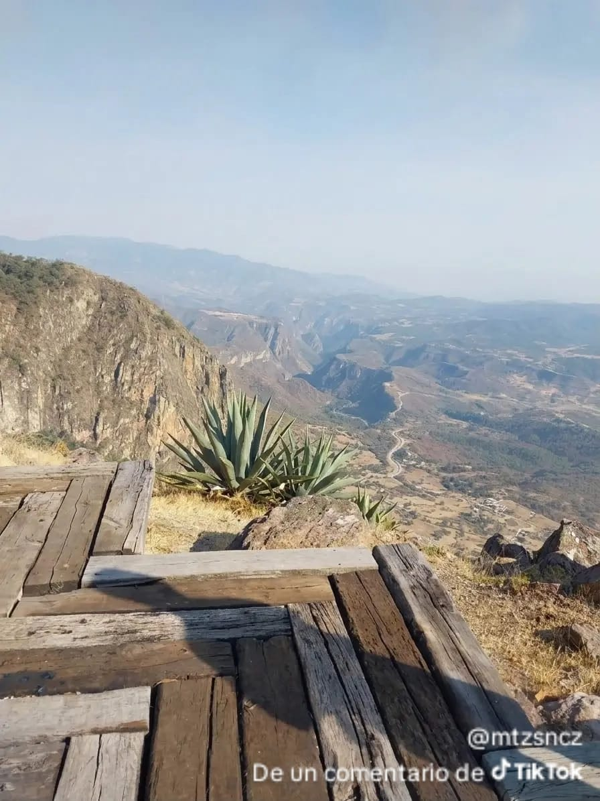
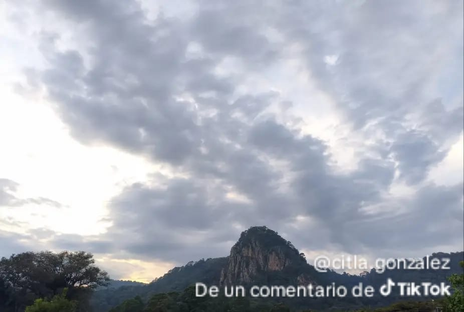
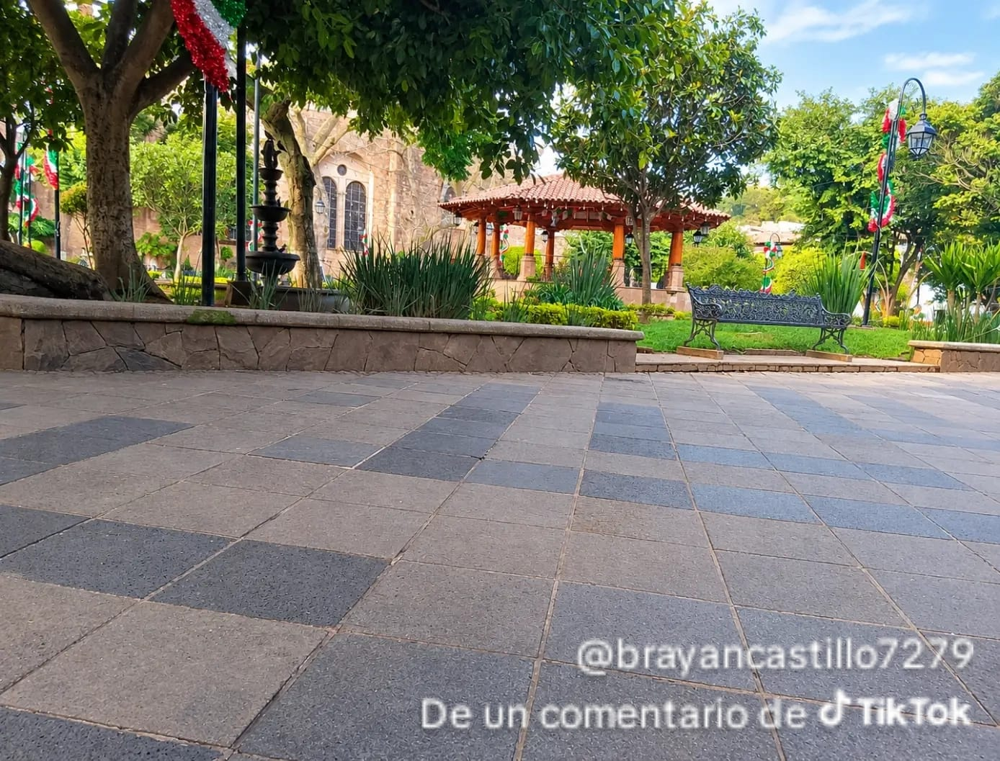
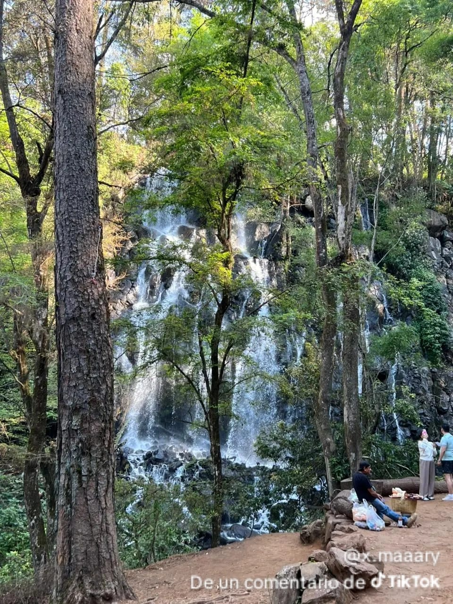
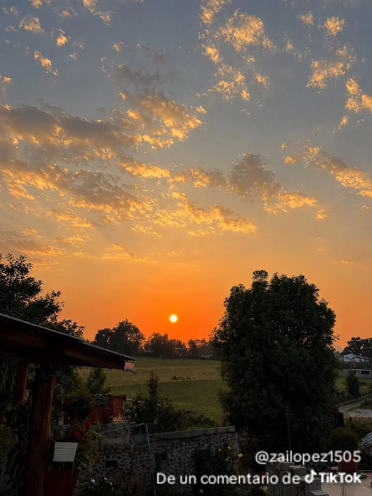

Mirador al Peñon
El rinconcito entre bosquues donde encontraras tranquilidad y paz a unos metros de la albarrada Este municipio es atravesado por valle de bravo que es una extensión del Nevado de Toluca. Sus elevaciones más importantes son los cerros del Temeroso, la Soledad, el Fortín, las Peñas del Diablo, el Peñón.

Reservas peñitas
Av. Principal, Godinez tehuastepec, Valle de Bravo, EdoMex. Exclusivo lugar, ubicado a 10 minutos de rancho avandaro y 5 valle santana, el la zona de las peñitas. Propiedad con circuito privado, topografía plana, ideal para quien busca espacios amplios rodeados de reservas naturales, espectacular vista al nevado de toluca, volcán. Con la bondad de tener una superficie privativa de 17,937 m2, más una hectárea de reserva natural para preservar, ubicación estratégica con increíbles desarrollos de gran plusvalía en Valle de Bravo.

Centro Valle de Bravo.
Av. Juárez con Independencia, Centro, 51200 Valle de Bravo, EdoMex Para llegar a Valle de Bravo desde la Ciudad de México, la ruta más común es salir hacia el poniente por el paseo de la Reforma, tomando la carretera a Toluca, y atravesar esta última para luego dirigirse hacia Temascaltepec, pasando a un lado de Xinantecatl, el Nevado de Toluca, un volcán inactivo y ocasionalmente nevado, y después seguir las indicaciones. Alternativamente, desde Toluca puede tomarse la carretera a Zitácuaro y después seguir las indicaciones. Ambas rutas de Toluca a Valle de Bravo incluyen tramos de doble carril; particularmente, la ruta de Temascaltepec presenta cierta dificultad para el conductor debido a las curvas, la ocasional neblina y el mal estado de las carreteras en época de lluvias.

Cascada avandaro
Avandaro Valle de bravo,Edo de Mexico,Avándaro, Valle de Bravo es la zona más turística y bonita del pueblo. Tiene cabañas, restaurantes, cafés, tiendas, campo de golf y mucha naturaleza. Es ideal para pasear, comer rico y disfrutar del paisaje.

palito verde
Pueblo de Valle de Bravo llamado Palito verde Bosques Ancestrales Miles de hectáreas de bosque de oyamel y encino rodean el valle, ofreciendo senderos para caminata, ciclismo y contemplación. Palito Verde, Valle de Bravo es una comunidad tranquila y con mucho verde, ubicada en la entrada a Cuadrilla de Dolores, a unos minutos del centro. Es una zona rural, con casas, naturaleza y ambiente familiar.

La huerta San Agustin
La huerta san agustin esta para arriva de la cuadrilla municipo de valle de bravo. La Huerta San Agustín es una localidad que se encuentra en el municipio de Valle de Bravo, Estado de México. Esta aldea se caracteriza por su clima agradable, con temperaturas cercanas a 19.59 °C y una humedad del 54%. La localidad tiene una población de 174 habitantes, con una altitud de 2,396 metros sobre el nivel del mar. La Huerta San Agustín es conocida por su cercanía a la aldea de Peña Blanca y Escalerillas, y está a 6 kilómetros al sureste de Valle de Bravo.